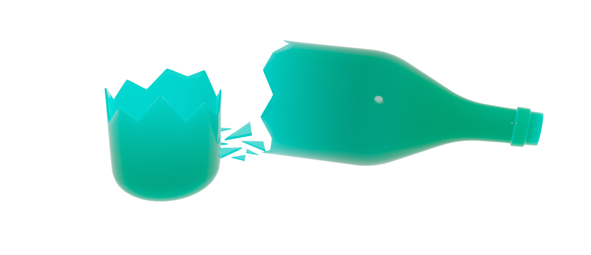

Статьи
Выбросим предметы из стекла
Стекло — это материал, который уже долгое время
используется в быту и производстве. Он является
универсальным и долговечным, но также имеет некоторые
негативные свойства.
Стекло является аморфным твердым материалом, не имеющим
кристаллической структуры.
 Негативные свойства
Негативные свойства
Стекло не является биоразлагаемым материалом и может
пролежать на свалке сотни лет, загрязняя окружающую среду.
Кроме того, его производство требует больших затрат энергии
и ресурсов.

Что с ним делать?
Однако стекло может быть переработано и использовано вновь,
что позволяет уменьшить количество отходов и экономить
ресурсы. Стеклянные бутылки и банки могут быть утилизированы
через переработку, а стекло также можно использовать для
создания дорожного покрытия, изготовления новых стеклянных изделий
и строительных материалов.
Плюсы использования стекла
Кроме того, использование стеклянных изделий, таких как бутылки
и банки, может помочь снизить количество пластиковых отходов,
так как они могут быть многократно использованы. Поэтому, если мы
будем бережно относиться к стеклу и утилизировать его
правильно, мы сможем снизить негативное влияние
на окружающую среду и экономить ресурсы.